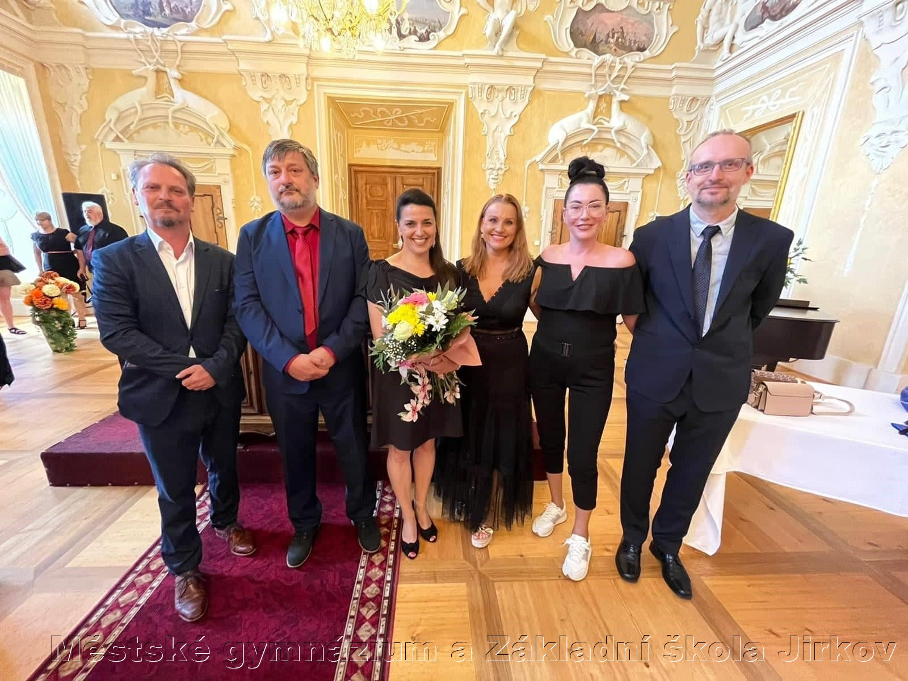
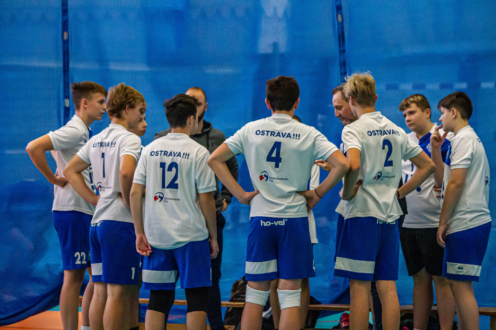
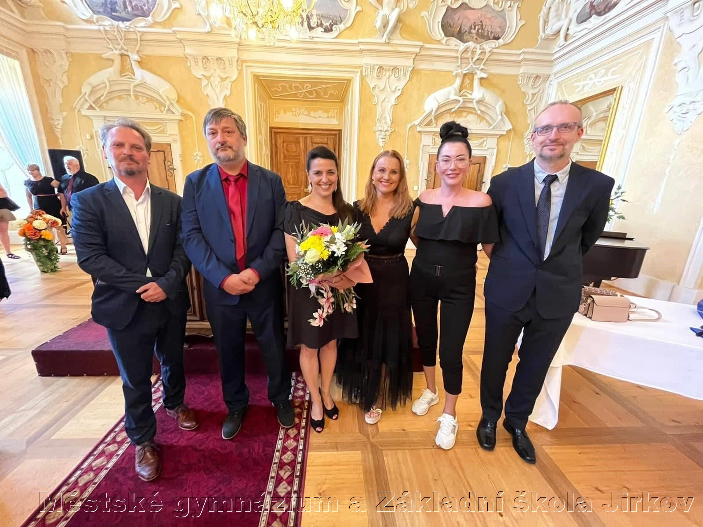
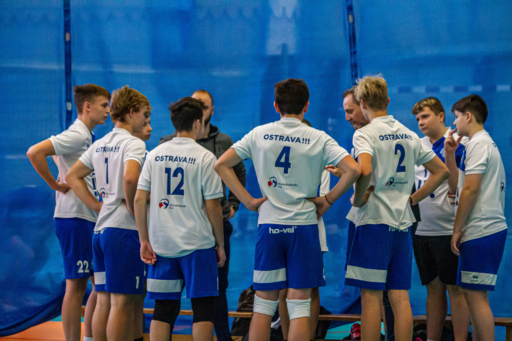
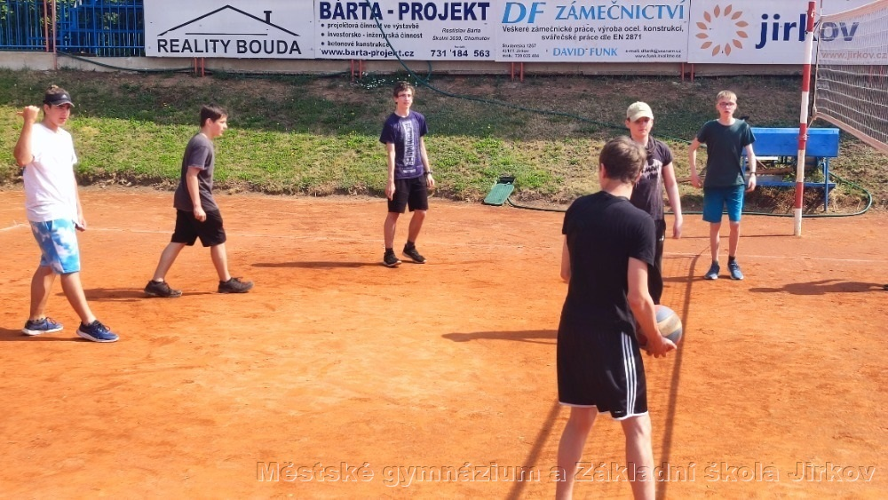
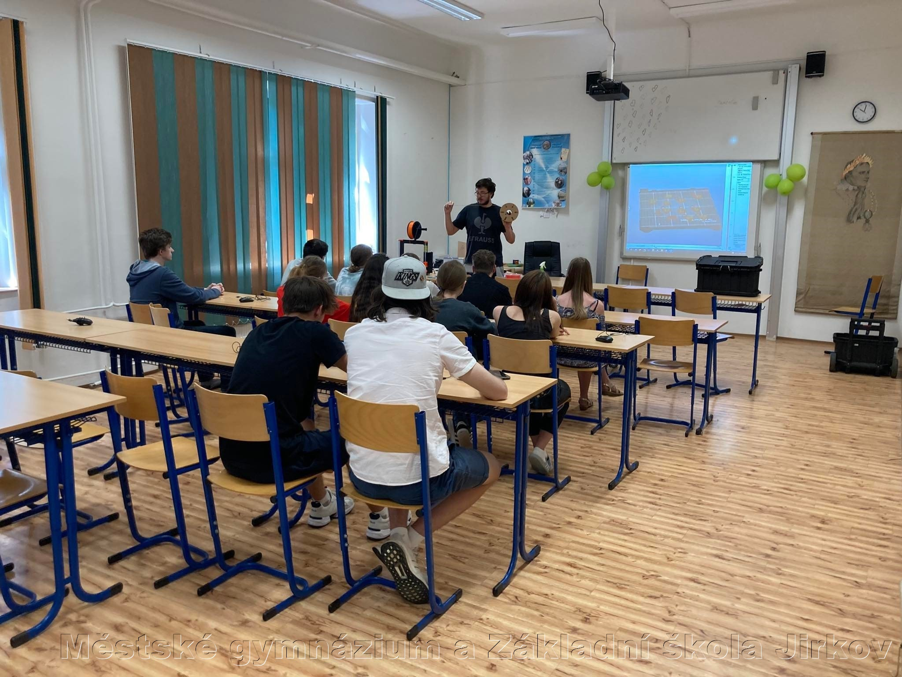
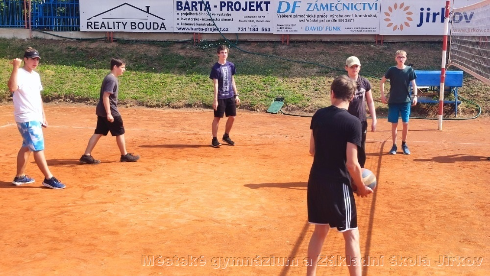
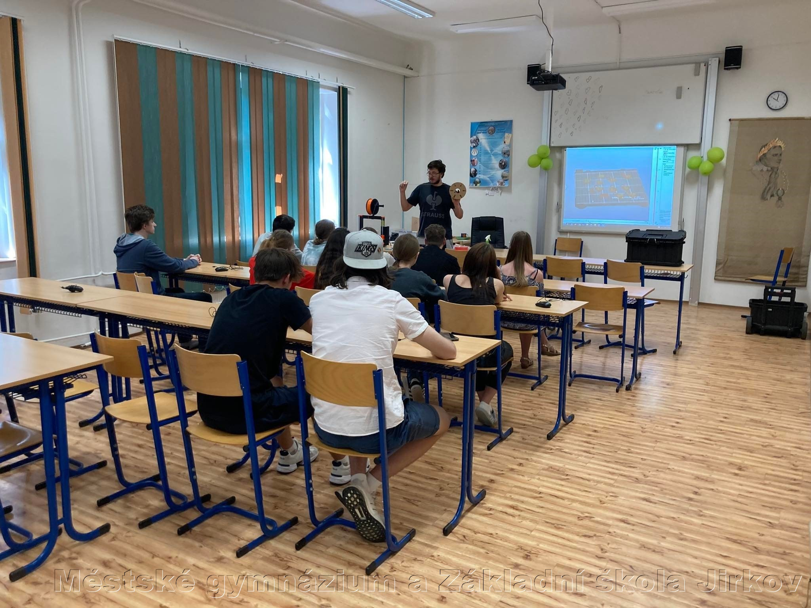

O naší škole
Městské gymnázium Jirkov poskytuje všeobecné středoškolské vzdělání. Absolventi školy jsou připraveni ke studiu na libovolné vysoké škole a kvalitní jazyková příprava umožňuje pokračovat ve studiu i v zahraničí. Jsme moderní dynamická škola. Nižší počet žáků ve třídách zajišťuje individuální přístup a tím nabízí kvalitní výuku v příjemném prostředí bez nadměrného stresu. Ke čtyřletému studiu jsou přijímáni žáci z 9. tříd ZŠ po úspěšném absolvování přijímacího řízení. Přijímací zkoušky mají podobu písemných testů z českého jazyka a matematiky, které zpracovává centrum pro zjišťování výsledků vzdělání (CERMAT). Studenti prvního a druhého ročníku mají pevný učební plán, důraz je kladen na výuku jazyků a přírodovědných předmětů. Ve třetím a čtvrtém ročníku si studenti vedle stálých předmětů vybírají i z volitelných předmětů již podle svého zájmu, zaměření a budoucí profese. Tyto předměty umožňují profilaci studentů vzhledem k jejich dalšímu studiu. Žáci čtyřletého studia se učí dvěma světovým jazykům. Výuka probíhá ve skupinách do 15 žáků. Gymnázium podporuje sportovně nadané žáky. Nabízí možnost individuálního studijního plánu pro sportovní talenty s odpovídající sportovní výkonností.
 



 


